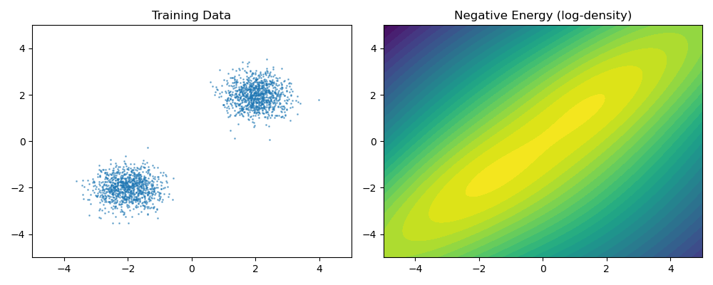

EBM and Contrastive Learning
What is Energy-Based Model
Define a distribution via an unnormalized energy function \(E_\theta(x)\):
\[ p_\theta(x) = \frac{\exp(-E_\theta(x))}{Z_\theta}, \quad Z_\theta = \int \exp(-E_\theta(x))\, dx \]
- Low energy = high probability
- \(E_\theta\) can be any neural network (very flexible)
- The partition function \(Z_\theta\) is intractable — cannot compute or differentiate directly
How to Learn
The log-likelihood gradient decomposes into two terms:
\[ \nabla_\theta \log p_\theta(x) = -\nabla_\theta E_\theta(x) + \mathbb{E}_{x^- \sim p_\theta}\left[\nabla_\theta E_\theta(x^-)\right] \]
| Term | Meaning |
|---|---|
| \(-\nabla_\theta E_\theta(x)\) | Push energy down on real data |
| \(\mathbb{E}_{p_\theta}[\nabla_\theta E_\theta(x^-)]\) | Push energy up on model samples |
The second term requires sampling from \(p_\theta\) — expensive (MCMC needed).
Contrastive Learning (Contrastive Divergence)
Approximate the intractable model expectation with short-run MCMC:
- Take data point \(x^+\)
- Initialize \(x^- = x^+\), run \(k\) steps of Langevin dynamics: \[ x^-_{t+1} = x^-_t - \frac{\eta}{2}\nabla_x E_\theta(x^-_t) + \sqrt{\eta}\,\xi_t \]
- Update parameters: \[ \theta \leftarrow \theta - \alpha\left[\nabla_\theta E_\theta(x^+) - \nabla_\theta E_\theta(x^-)\right] \]
This is CD-k (Contrastive Divergence). Biased but effective.
Intuition
- Real data → lower energy (more probable)
- Negative samples from short MCMC → higher energy (less probable)
- The model learns a "landscape" where data sits in valleys
My Note: if we replace x with τ, we will see inverse RL is 'contrastive learning' where negative samples come from trajectory optimization/RL rather than Langevin dynamics.
Example
import torch import torch.nn as nn from torch.utils.data import DataLoader, TensorDataset # --- Test Data: 2D Gaussian Mixture --- n = 2000 mix = torch.cat([ torch.randn(n // 2, 2) * 0.5 + torch.tensor([2.0, 2.0]), torch.randn(n // 2, 2) * 0.5 + torch.tensor([-2.0, -2.0]), ]) dataloader = DataLoader(TensorDataset(mix), batch_size=128, shuffle=True)
# --- Model --- class EBM(nn.Module): def __init__(self, dim=2, hidden=64): super().__init__() self.net = nn.Sequential( nn.Linear(dim, hidden), nn.SiLU(), nn.Linear(hidden, hidden), nn.SiLU(), nn.Linear(hidden, 1)) def energy(self, x): return self.net(x).squeeze(-1) def langevin_negative(ebm, x_init, steps=20, step_size=0.01): x = x_init.clone().detach().requires_grad_(True) for _ in range(steps): e = ebm.energy(x).sum() grad = torch.autograd.grad(e, x)[0] x = x.detach() - (step_size / 2) * grad + (step_size**0.5) * torch.randn_like(x) x.requires_grad_(True) return x.detach() # --- Training --- ebm = EBM() opt = torch.optim.Adam(ebm.parameters(), lr=1e-3) for epoch in range(5): total_loss = 0.0 for (x_pos,) in dataloader: x_neg = langevin_negative(ebm, x_pos, steps=20) loss = ebm.energy(x_pos).mean() - ebm.energy(x_neg).mean() opt.zero_grad() loss.backward() opt.step() total_loss += loss.item() print(f"Epoch {epoch}: loss={total_loss / len(dataloader):.4f}") # --- Verify: energy should be lower on data than on random noise --- noise = torch.randn(100, 2) * 3 data_sample = mix[:100] print(f"Energy on data: {ebm.energy(data_sample).mean().item():.4f}") print(f"Energy on noise: {ebm.energy(noise).mean().item():.4f}")
Epoch 0: loss=-0.0043 Epoch 1: loss=-0.0144 Epoch 2: loss=-0.0318 Epoch 3: loss=-0.0606 Epoch 4: loss=-0.0811 Energy on data: -1.1407 Energy on noise: 2.6085
Visualize
import matplotlib.pyplot as plt import numpy as np fig, axes = plt.subplots(1, 2, figsize=(10, 4)) # Plot data axes[0].scatter(mix[:, 0].numpy(), mix[:, 1].numpy(), s=1, alpha=0.5) axes[0].set_title("Training Data") axes[0].set_xlim(-5, 5) axes[0].set_ylim(-5, 5) # Plot energy landscape grid = torch.linspace(-5, 5, 100) xx, yy = torch.meshgrid(grid, grid, indexing='xy') pts = torch.stack([xx.flatten(), yy.flatten()], dim=1) with torch.no_grad(): energy = ebm.energy(pts).reshape(100, 100).numpy() axes[1].contourf(xx.numpy(), yy.numpy(), -energy, levels=30, cmap='viridis') axes[1].set_title("Negative Energy (log-density)") axes[1].set_xlim(-5, 5) axes[1].set_ylim(-5, 5) plt.tight_layout() fname = "ebm_visualization.png" plt.savefig(fname, dpi=100) fname
